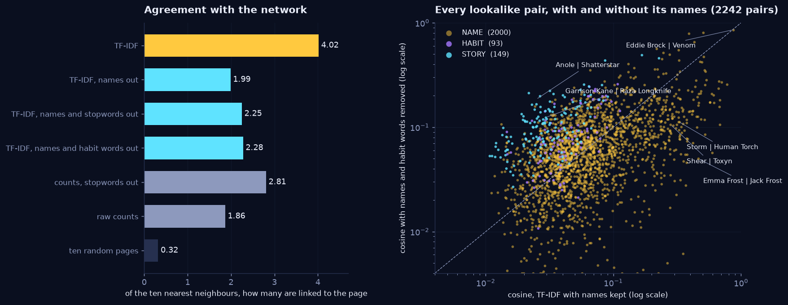

A surname is not a story.
99 percent of the strongest lookalikes are names.
This week's lookalikes explorable put Storm next to the Human Torch, under TF-IDF, because Johnny Storm has her surname. The course left us with an opener: find a way to tell name-driven matches from story-driven ones across the whole corpus, and show what the lookalikes look like once the names are handled. A cosine similarity is a sum with one term per word, so it can be split exactly, and that is the whole method: how much of a pair's cosine comes from names, how much from the habits of Wikipedia, how much from what the pages actually say. Of the 506 pairs of pages with a cosine of 0.1 or more, 99.2 percent are held together by names. Take the names out and the network stops agreeing with the text, for a reason that is almost embarrassing: a link is a name. What remains are lookalikes that are linked no more often than two random pages, which is the interesting part. Then we made it playable: a game of Taboo against the cosine, and a dial that turns the names out of any lookalike list.
- The split is exact. With unit-length TF-IDF vectors, cos(a, b) is a sum over words of uwvw. Call each word a name, a habit word (a stopword, or a word on a third of all pages) or neither, and the cosine is names + habits + other, to the last decimal. The largest part gives the verdict: NAME, HABIT or STORY.
- Lookalike lists are name lists. Of the 2,242 distinct pairs in anyone's ten nearest neighbours, 2,000 (89 percent) are NAME, 149 STORY, 93 HABIT. Of the 500 highest cosines in the corpus, 496 are NAME. Names are the rarest words, TF-IDF rewards rarity, and so a surname is the strongest possible signal.
- Names are how text finds the network. Ten TF-IDF neighbours include 4.0 linked pages on average; with the names removed, 2.0 (ten random pages: 0.3). Of the 1,479 links whose target has a usable name, 84 percent are a page naming the page it links to.
- What is left is a different map. Pairs whose lookalike score is story words are linked 4.1 percent of the time and share a Louvain community 13.7 percent of the time. Two random pages: 3.1 and 13.3. Anole and Shatterstar, Blue Eagle and Red Raven, Morbius and Union Jack: same story, no path shorter than three.
- Remove only the names and the pronouns win. her or she is the top shared word in 28 percent of the lookalike pairs, a pattern that the course page warns about for GloVe and that TF-IDF has too.
- We read 45 pairs. The rule agrees with the reading on 36 of 41 clear cases; three of the five misses sit at a name share of 48 to 49 percent and two are drew, a verb on one page and Jessica Drew's surname on the other.
- TABOO-IDF, the game. Describe a character one word at a time while a cosine machine ranks all 303 pages. With names allowed the best single word is a name for 212 of 216 characters and wins by 15 times the margin; with names banned you have to know the page.
- THE NAME DIAL, the explorable. Two sliders, names and habit words, from 100 to 0, re-rank any page's lookalikes live, with the agreement with the network measured as you drag. It is in the page, below.
What we asked
- Which words are names? A rule we can state, apply to the whole corpus, and audit.
- How much of the text-network agreement is names? The lookalikes explorable's 4.0 neighbours out of ten, with and without them.
- Can a cosine be split into name-driven and story-driven? Exactly, for every pair, with a verdict we test against pairs we read.
- What do lookalikes look like once the names are handled? Neighbour lists, and the pairs that are close in text and far in the network.
- Can you feel the difference? A game and an explorable that put the split in your hands.
I.Which words are names?
The course page's own recipe for removing names (§3, topic models) is: a word that is capitalised in most of its uses is a name. We used it, with two changes, and we stated them before computing a single similarity, as the exercises ask. Tokens are letters-only, lowercased (736,658 of them, 25,254 types; this is a regular expression, not week 5's spaCy, so apostrophes split don't into two tokens and the counts differ a little from last week's 718,552 and 25,138).
- Sentence starts do not count. The course rule, applied literally, calls 389 words names only because they open sentences: during, however, fictional, young, publication, references, external, despite, video. We count capitalisation only in the middle of a sentence, and a word never seen there is not a name.
- Page titles do count. A word in the title of any of the 303 pages is somebody's name even when it is also a word: Ruby Summers, Merc, Witness, Power Man. We add it if at least a fifth of its mid-sentence uses are capitalised (or it is too rare to tell); time, two, father, space, brain are in titles too and nobody capitalises them on sight, so they stay words. NLTK's stopwords are never names.
That makes 8,651 name types: 8,288 by capitalisation alone, 345 by both, 18 by title alone. A third of the vocabulary, and 21.0 percent of all tokens. A second class we call habit words: the NLTK stopwords and every word found on at least a third of the 303 pages (101 or more). That adds 232 words that no English stopword list has heard of and every Wikipedia article about a comic character contains: character, series, appears, issue, voiced, playable, list, incarnation. The function words of English and the function words of Wikipedia.
II.Names are how text finds the network
The lookalikes explorable asked: of a page's ten nearest neighbours by text, how many are linked to it in the network? We recomputed the course's numbers first, as a check on our pipeline, and then removed things.

Raw counts give 1.86 linked neighbours out of ten, stopwords removed 2.81, TF-IDF 4.02: the course page's 1.9, 2.8 and 4.0, to the decimal, so the pipeline is the same one. Take the names out of TF-IDF and the agreement falls to 1.99, below the stopword-removed counts that the course called the blunt fix. Take the habit words out too and it is 2.28. Ten random pages: 0.32. So what is left after removing names is real (seven times chance) and is less than half of what TF-IDF reported.
The reason is not subtle once it is said. A link from A to B exists because A's page contains B's name, in a sentence or an infobox. Of the 1,784 links, 1,479 have a target with a usable name (not shared with another page); on 1,242 of them, 84 percent, the source page contains that name. Names are the text's own copy of the network, and TF-IDF, which prizes rare words, finds them first. That does not make the agreement fake. It means the text and the network are not two independent witnesses, and "text confirms the network" is mostly "the network was written as text".
III.Splitting a cosine
With u = a / |a| and v = b / |b|, cos(a, b) = Σw uwvw. One term per word. Every word is a name, a habit word or neither, so the sum splits in three, exactly:
cos(a, b) = names + habit words + other words.
The verdict is a rule on the three numbers, and nothing is learned: NAME if the names part is at least half of the cosine; otherwise HABIT if the habit part is at least as big as the other words' part; otherwise STORY. The parts add up to the number the course's lookalikes explorable already shows, so there is nothing to tune and nothing to trust: the arithmetic is the explanation.
![Horizontal stacked bars, one per pair, showing percent of the cosine from names in gold, habit words in purple and other words in cyan, sorted from most name-driven at the top. Emma Frost and Jack Frost 98 percent names; Jessica Jones and Spider-Woman (Jessica Drew) 93; Storm and Human Torch 92; Shear and Toxyn 91; Anne Weying and Turbo 86; Eddie Brock and Venom 82; down to Garrison Kane and Raza Longknife 14 percent names and 84 other words, Doom 2099 and Ogre mostly other words, and She-Hulk and Toxyn 72 percent habit words. Right column: the cosine before and after removing names and habit words.](../../assets/figures/week6_split.png)
Storm and the Human Torch: cosine 0.325, 92 percent of it the word storm; without names and habit words 0.113. Emma Frost and Jack Frost, 0.463 and 98 percent frost: a surname shared by two strangers, 0.050 once it is gone. Anne Weying and Turbo, 86 percent brock: Eddie Brock's ex-wife, and a Brock Jones who put on a stranger's armour. Eddie Brock and Venom are 82 percent names and still 0.867 → 0.858, because they are the same character and the names are the story: a split tells you what a match is made of, not whether it is a good match. Mania and Venom go from 0.506 to 0.808 when the names go, and Blade and Morbius from 0.167 to 0.492: vampires. At the bottom, Garrison Kane and Raza Longknife are 84 percent bionic, parts, cyborg, and She-Hulk and Toxyn are 72 percent she and her, which is why HABIT exists.
Across the whole corpus. Of all 45,753 pairs of pages, the median cosine is 0.009 and the 99th percentile 0.108. The 506 pairs at or above 0.1 are 99.2 percent NAME and the 1,435 at or above 0.05 are 90 percent. Other kinds of match only show up further down: of the 7,549 pairs at or above 0.02, 58 percent are NAME, 26 percent STORY and 16 percent HABIT. Over everything, 22 percent of pairs are NAME, 26 percent HABIT and 51 percent STORY, because most pairs have almost nothing in common and what little they share is not a name. A lookalike list is made of the top of that distribution, and the top of the distribution is names.
In the ten-nearest-neighbour lists, 2,000 of 2,242 pairs are NAME, and the names come in three kinds. For the name that carries the most of each pair's cosine we asked whether it is part of one of the two pages' own titles (1,230 pairs, 62 percent: Ghost Rider, Ghost Rider (Johnny Blaze), Wikipedia calling two articles by one name), somebody else's name on the roster (249, 12 percent: Cyclops on a page about Jean Grey), or a team, a publisher, a creator or a place (521, 26 percent: Morituri, Timely, Ditko). Name-driven pairs are also the ones that are linked: 37.6 percent of them, against 3.1 for any two pages, 11.4 for STORY and 15.1 for HABIT. Names are what the network can see.
Did the rule get it right?
We drew 45 of the 2,242 pairs at random, nine from each of five name-share bins, and read them: the shared words
and a sentence from each page. We labelled each N (carried by names), S (story), H (habit) or M (mixed), without
looking at the rule's verdict first. The file is data/week6_pair_audit.tsv; the analysis reads it back
and recomputes the rule on every row. Of 45, we call 32 N, 4 S, 5 H and 4 M. On the 41 clear cases the rule agrees on
36. The five disagreements:
- Three are on the line: She-Hulk and Vance Astrovik (name share 49 percent: the shared words are Jennifer Walters, She-Hulk's real name), Rockman and The Witness (48), Nightmask and Spider-Man (49: Ditko, creator, and Star Brand). A hard cut at one half puts some pairs on the wrong side.
- Two are drew: NFL SuperPro and Miracleman each pair with Spider-Woman (Jessica Drew) because drew is a verb on their pages (issue 6 … drew substantial complaints from Hopi representatives; Anglo initially wrote and drew the strips himself) and a surname on hers. Our rule counts it as a name on both sides, since it is in a title, and the other shared words keep the name share under one half. A model of names that tells a surname from a verb needs the sentence, not the word.
All 45 are small, and the sample is stratified by name share, which is why 32 are N. It tells us the rule is roughly right and wrong in the places we can name; it does not give a precision to two decimals.
IV.What the lookalikes look like without the names
Four characters, their four nearest pages three ways. A red × marks a page that is not linked to the character in the network.
| Character | Names kept | Names out | Names and habit words out |
|---|---|---|---|
| Storm | Human Torch ×, Black Panther, Cyclops, Jean Grey | Jean Grey, She-Hulk ×, Emma Frost, Scarlet Witch | Jean Grey, Cyclops, Emma Frost, Scarlet Witch |
| Wolverine | Wolverine (Ultimate Marvel character), Cyclops, Jean Grey, Storm | Deadpool, Cyclops, Shang-Chi ×, Black Panther × | Black Panther ×, Wolverine (Ultimate Marvel character), Deadpool, Cyclops |
| Doctor Strange | Jericho Drumm, Doctor Druid, Cloak and Dagger, Spider-Man | Scarlet Witch, Doctor Druid, Brian Braddock ×, Hercules × | Doctor Druid, Scarlet Witch, Brian Braddock ×, Satana |
| Black Widow | Yelena Belova, Red Guardian, Iron Man (Ultimate Marvel character), Ursa Major | She-Hulk ×, Spider-Woman (Jessica Drew), Jean Grey ×, Storm × | Luke Cage ×, Spider-Woman (Jessica Drew), Shang-Chi ×, Wolverine |
Storm's closest page was the Human Torch, unlinked, on one word. With the names out her list is Jean Grey, She-Hulk, Emma Frost, Scarlet Witch, and the second page is a pronoun accident: she and her are the top shared word in 771 of the 2,728 distinct pairs in the names-out lists, 28 percent. This is the course page's own warning about GloVe (the home end is almost all women, pulled there mostly by the words her and she) turning up one level earlier, in a cosine that never saw a word vector. It is why habit words are a class of their own. Remove them as well and Storm's list is Jean Grey, Cyclops, Emma Frost, Scarlet Witch and Black Panther: all five linked. Wolverine's list loses the Ultimate Wolverine (a name, written twice) and gains Black Panther and Shang-Chi, which no link supports, and Doctor Strange's gains Brian Braddock and Hercules. For these four, the names-kept lists are mostly the franchise and the namesakes; the names-out lists are people who do similar things.
Close in text, far in the network
Among pages of at least 500 words, there are 37,128 pairs. 22,738 of them are not linked and at least three steps apart or not connected at all. Rank those by cosine with names and habit words removed, and read the top. The first pair below, Blackthorn and Scaredycat, was already a lookalike with names kept (0.31), because the Morituri are named; the other seven were not (0.03 to 0.05).
| Pair | Shared words | Cosine kept → clean | Steps apart | What the pages say |
|---|---|---|---|---|
| Blue Eagle ↔ Red Raven | wings, artificial, winged, gravity, airplane | 0.025 → 0.23 | 4 | Two Golden Age heroes who fly on artificial wings. |
| Anole ↔ Living Lightning | gay, sexuality, lesbian, school, unhappy | 0.046 → 0.23 | 3 | Both pages are partly about the character coming out as gay. |
| Garrison Kane ↔ Yo-Yo Rodriguez | arms, bionic, weapon, gained, firearms | 0.033 → 0.19 | no path | Both lose their arms and are given bionic ones. |
| Guardsman ↔ Turbo | armor, suit, wearer, circuitry, cybernetic | 0.036 → 0.16 | 3 | Each is a suit of armour and the person inside it. |
| Morbius ↔ Union Jack (Joseph Chapman) | blood, vampire, vampires, vampiric, vampirism | 0.029 → 0.18 | 3 | Morbius is a living vampire; Chapman spent a stretch hunting them. |
| The Union (Marvel) ↔ Venom | symbiote, suit, sonic, government, bond | 0.038 → 0.17 | 3 | A team whose suits are made from the symbiote, and the symbiote. |
| Deathlok ↔ Garrison Kane | cyborg, cybernetic, parts, metal, weapon | 0.033 → 0.17 | 3 | Two cyborgs: a dead man reanimated with technology, and a Weapon X soldier. |
| Blackthorn ↔ Scaredycat | recipients, organism, effect, metabolism, panic | 0.309 → 0.21 | no path | The Morituri process, on both pages. The names were not hiding anything here. |
Every pair above was checked against the text: Blue Eagle and Red Raven really are both on artificial wings, Anole and Living Lightning really are both a page about coming out, Kane and Yo-Yo Rodriguez both lose their arms. None of them is linked, none is within two steps, and most are in different communities. We measured the whole population of such pairs. Of the 2,520 distinct pairs in anyone's ten nearest neighbours once names and habit words are removed, 1,398 are STORY, and they are linked 4.1 percent of the time and share a Louvain community 13.7 percent of the time. Two random pages are linked 3.1 percent of the time and share a community 13.3 percent of the time, with the partition recomputed here. The NAME pairs in the same lists are linked 47.9 percent and share a community 60.3. Story similarity is, to a first approximation, independent of the network. That is the point of a text half: the links are a map of who was written about next to whom, and the story map is another one.
V.So we made it playable
Everything so far is a claim about arithmetic, and arithmetic is easy to nod along to. So we turned the split into two things you can use instead of read: a game and an explorable. TABOO-IDF is the game. You describe a secret character one word at a time, a cosine machine ranks all 303 pages after every word, and names are taboo. THE NAME DIAL is the explorable behind it: two sliders, one for how much names count and one for how much Wikipedia's habit words count, that re-rank any page's lookalikes as you drag. We built two because they answer different questions. The dial lets you watch what names do to a lookalike list, continuously, for any page, with the network's agreement measured as you drag; it is how you find out. Taboo makes you produce language for the machine, which is how you feel why it matters. That is why Taboo is the main one: it is the only version where you are the writer and TF-IDF is the reader, and the whole post collapses into one switch. With names allowed, you say the name and win; with names banned, you have to know the page. Between them they show the same two things from opposite sides. Names are the cheapest signal TF-IDF has to offer, so a lookalike list, or a clue-giver, that is allowed to use them will. And nothing is hidden: the dial's bars add up to the cosine printed beside them, and Taboo's machine is a sum you could do by hand.
Taboo
TABOO-IDF turns the machine round. A secret character is on your screen and you have to make a cosine-similarity machine find them by typing words, one at a time. After each word, all 303 pages are ranked by the cosine between your word list and their TF-IDF vectors: the sum of each page's weight for your words, divided by the square root of how many you typed. You win when your character is first. Names are taboo: a word the name rule calls a name is a strike, it counts as a word used and the machine ignores it. You have twelve words, strikes and hints included, and points are eleven minus the words you used. A hint spells the first letter, then three letters, of one of the page's strongest plain words and costs three.
The machine is not the hard part. We checked, for each of the 216 characters with at least 800 words, the single word that puts that page ahead of every other by the widest margin. An oracle that has read all 303 pages wins in one word, every time, names banned or not. With names allowed that word is a name for 212 of the 216, and the winning margin has a median of 0.58; with names banned it is 0.04, fifteen times narrower, and the word is often one no person would guess (kg for the Hulk, approval for Spider-Man). The game is the distance between what the machine can do and what you can guess about a page's vocabulary. With names on you say storm and win; with names banned you have to know that Storm's page is about weather, mutants, marriage.
▶ Play TABOO-IDF names banned, twelve words
The dial
The dial is the same split, as a knob. A verdict on a pair is a snapshot; what the split really gives you is a knob. Write each page's TF-IDF vector as names + habit words + the rest, multiply the first piece by a setting between 0 and 1, the second by another, and renormalise. At 1 and 1 that is the course's TF-IDF; at 0 and 1 it is TF-IDF with the names removed; at 0 and 0 the names and the habit words are both gone. The cosine of two pages at any setting is still a sum of three parts, because the three pieces of the dot product are the same three matrices we already had, scaled. So the whole interactive behaviour fits in three 303 × 303 tables and a few lines of arithmetic, and runs in the browser with no server.
THE NAME DIAL is that. You choose a page, or click through from a neighbour, and get its twelve nearest pages as bars split in gold, purple and cyan: names, habit words, everything else. Drag names count from 100 to 0 on Storm and the Human Torch, first in her list, drops out of the top twelve; with only the names gone She-Hulk is second and Cyclops twelfth, and when habit words go down as well She-Hulk falls to eleventh and Cyclops climbs back to second. Next to the list, two numbers: how many of this page's ten nearest are linked to it, and the same average over all 303 pages, with the agreement curve as the names dial goes from 0 to 100, so you can watch the 4.0 of section II collapse towards 2.0 under your own hand. The state is in the address bar, so a link keeps your dials.
One thing the dial shows that we did not expect: take only the habit words down and the network agrees a little more with the text, not less. On a grid in steps of five percent the best setting for the average agreement is names at 85 percent and habit words at 15, 4.08 linked neighbours in ten against TF-IDF's 4.02. A little less of Wikipedia's habit helps.
The dial, running in the page. It opens on Storm: drag Names count to zero and watch the Human Torch go. The data is three 303 × 303 tables, 1.4 MB, and nothing leaves your browser. Open it full screen for more room.
So the opener has an answer you can touch. To tell a name-driven match from a story-driven one, split the cosine and read the largest part; to see what the lookalikes look like once the names are handled, turn the names dial down, or play Taboo and find out how few words it takes when you cannot say who.
What surprised us
- The strongest lookalikes are names, almost without exception. 496 of the 500 highest cosines. The top of a TF-IDF similarity list is a list of names, mostly surnames and team names.
- The network agrees with the text because the text is the network. Where the target has a usable name, 84 percent of links are the source page naming it. Removing names removes half of the agreement, and the rest is still seven times chance.
- Story twins do not care about franchises. At chance on links (4.1 against 3.1 percent) and on communities (13.7 against 13.3). Wikipedia describes a vampire hunter and a vampire in the same words and the network has no reason to link them.
- Take away the names and she wins. 28 percent of the names-out pairs hold together on her or she. We had read the GloVe warning and did not expect to meet it in a TF-IDF.
- Coincidences are the purest names. Brock, Bruce, Johnny, Jessica: first names shared by strangers carry whole cosines, and a surname that makes two pages "similar" is more common than one that makes them related.
- In Taboo a name wins fifteen times more decisively than any other word. The best single word is a name for 212 of 216 characters, with a median margin of 0.58 over the runner-up; the best non-name word manages 0.04. The game is hard exactly where names are forbidden.
- Our own rule was wrong in two ways we could name. The sentence-start false positives and drew. We found both by reading, and by checking the rule against pairs we had labelled before looking at its verdict.
Reproduce it
One module holds the shared pipeline (the corpus, the name rule, TF-IDF as the course defines it, the split, the verdict), one script builds every figure and number in this post, two build the data for the dial and the game, and two check the data and the shipped pages by running them.
git clone https://github.com/Oddvar112/Social-Graphs-and-Interactions
cd Social-Graphs-and-Interactions
python scripts/analyse_week6.py # every figure and number in this post (a few seconds)
python scripts/build_week6_dial.py # the three matrices behind the dial -> data/week6_dial.js
python scripts/build_week6_taboo.py # postings, kinds and oracles for the game -> data/week6_taboo.js
python scripts/test_name_dial.py # recomputes the dial's data, runs core.js and dial.js
python scripts/test_taboo.py # recomputes every posting, runs core.js and game.js (node, or macOS's own JavaScript engine)
python -m http.server 8000 # then open http://localhost:8000/weeks/week6/taboo/ or .../dial/Needs numpy, networkx and matplotlib; there is no spaCy this week. Every number above is
written to data/stats_week6.json by analyse_week6.py, except the oracle figures, which come from
data/week6_taboo.js. The 45 pairs we read and our label for each are in data/week6_pair_audit.tsv.
The dial's test recomputes every diagonal entry and 600 random pairs of its three matrices with math.log and dictionaries,
and checks the engine against numpy at three dial settings and against the agreement numbers this post quotes. The game's test
recomputes every one of the 217,026 postings from the corpus, checks that each of the 216 oracle words wins alone in the shipped
engine in both modes (and, for 25 sampled characters, that no other word does better), and plays a full game against a stub page: a one-word win scores 10, a name
with names banned is a strike, an unknown word is free, a hint costs three, twelve words is a loss. We also broke the engines, the interfaces
and the data on purpose and confirmed the tests notice. Louvain is networkx's, version 3.7 here, so the partition has eight
communities (modularity 0.389) where week 5's run had seven; the community numbers on this page are from the partition we recomputed.
The text is the course's frozen release, marvel_pages.zip, unmodified. The links are the week 1 snapshot, in either direction.
Character pictures are the lead images of the Wikipedia articles, loaded as you play; we store only their URLs.